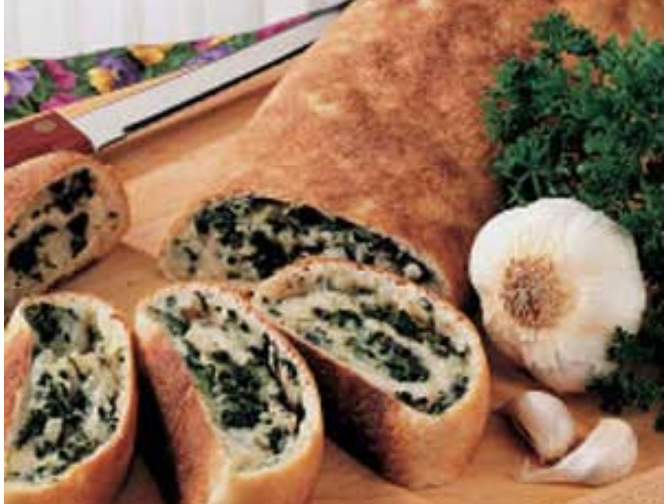

- 13.8 ounces of refrigerated pizza crust.
- 10 ounces of frozen chopped spinach, thawed and drained.
- 2 cups shredded part-skim mozzarella cheese.
- 1 cup finely chopped onion.
- 1 garlic clove, minced.
1. Roll pizza dough into a 14x10 inch rectangle on a lightly floured surface.
2. Combine the spinach, mozarella cheese, onion, and garlic in a large bowl.
3. Spoon the spinach mix over the dough to within 1 inch of the edges.
4. Roll up the dough, tuck ends under, and pinch the seam to seal.
5. Spray a baking sheet with cooking spray then place the dough with the seam side down on the sheet.
6. Bake at 400 degrees for 25-27 minutes or until golden brown.

Need more information? Email Gabi Harrington.
OR
Find me here!
32 Campus DriveThis recipe was found from the Taste of Home website!